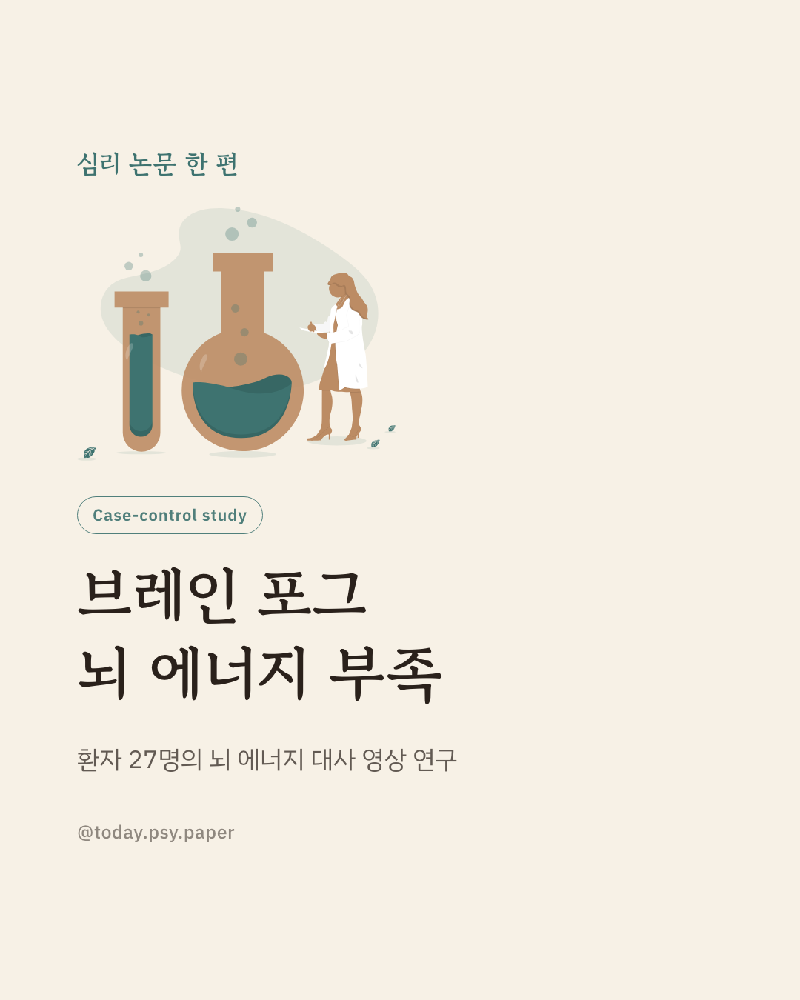
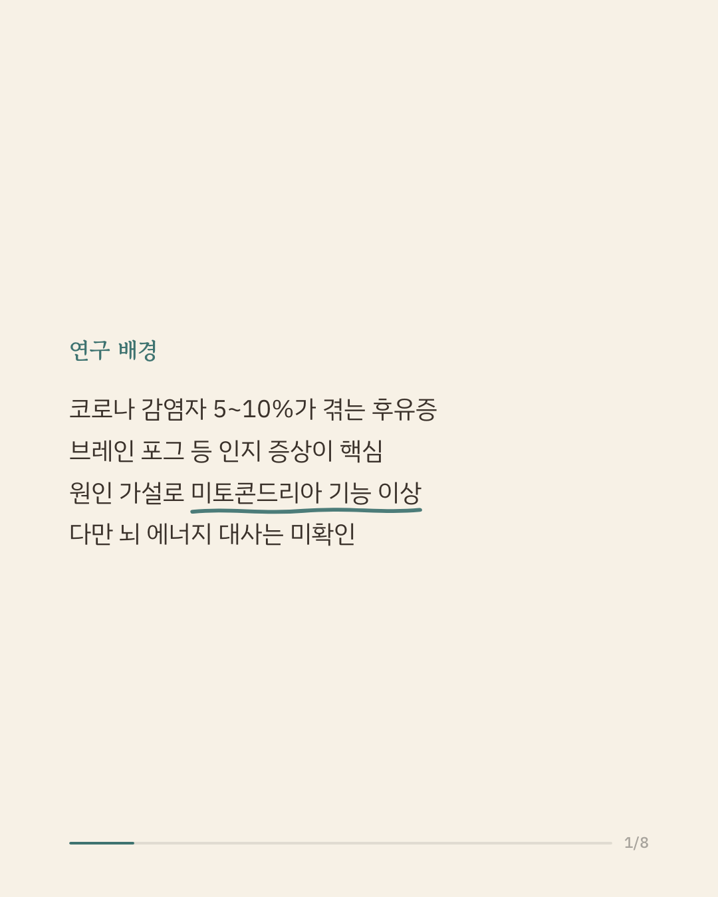
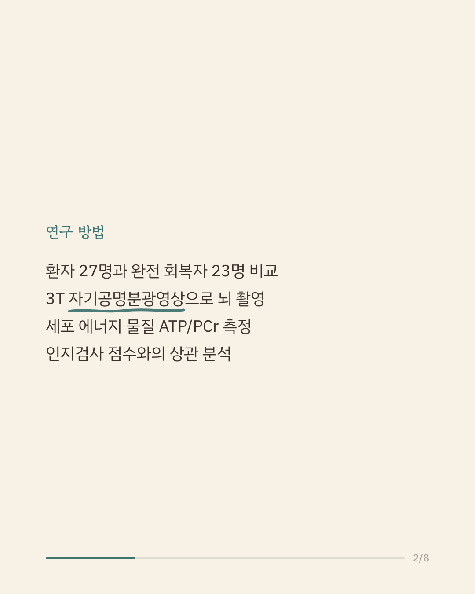
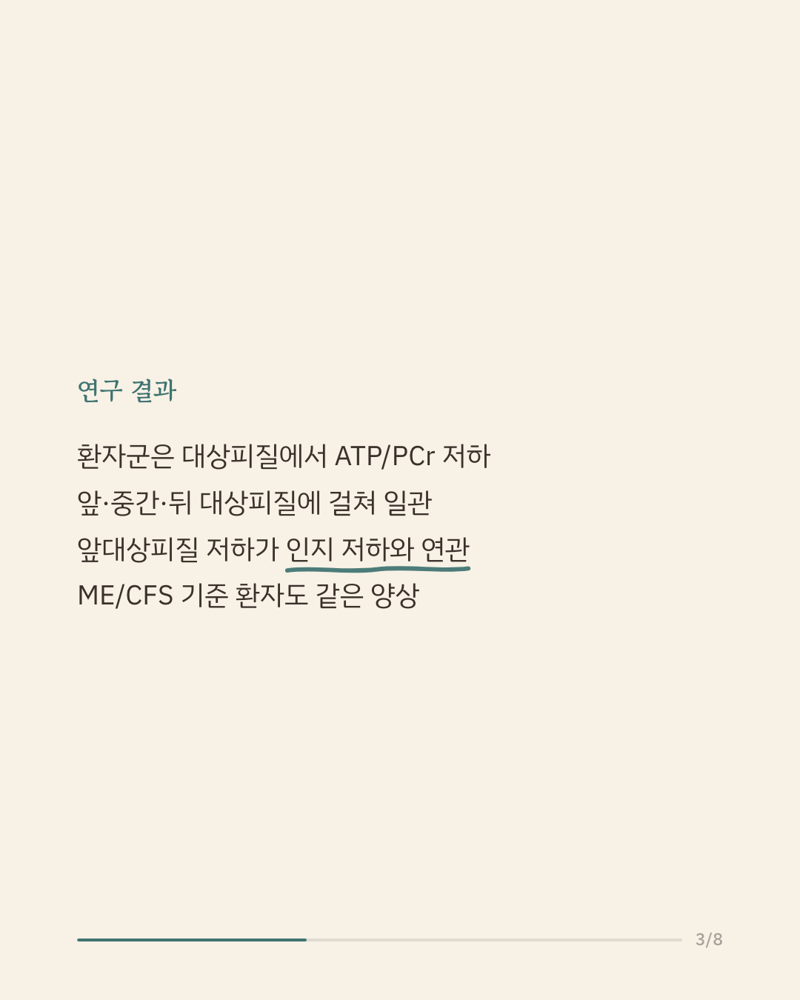
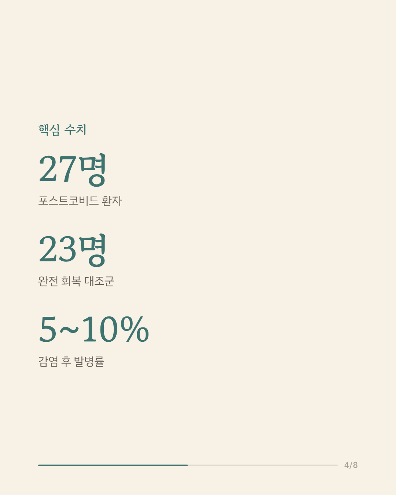
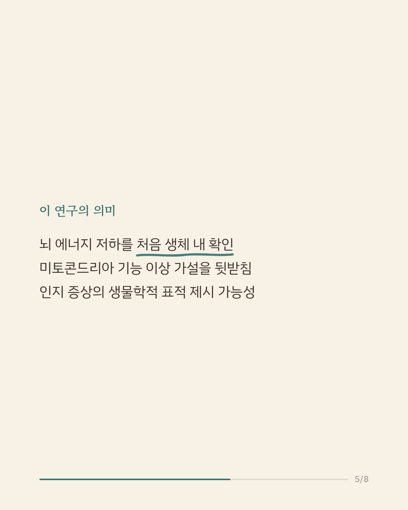
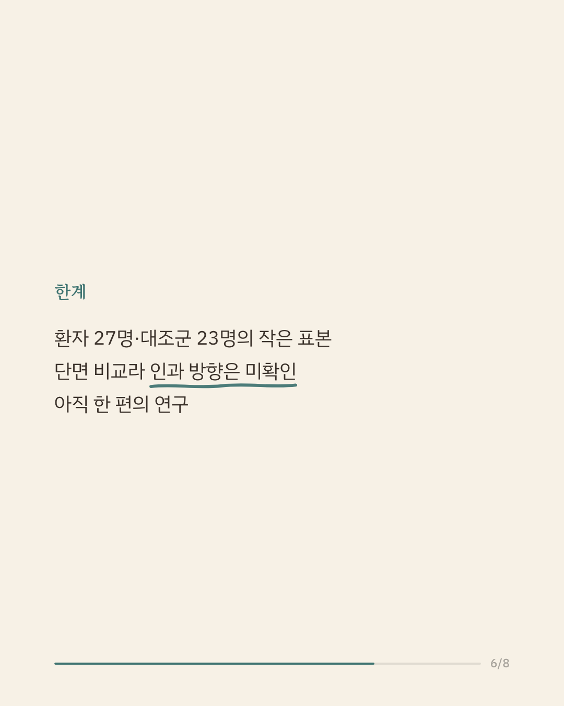
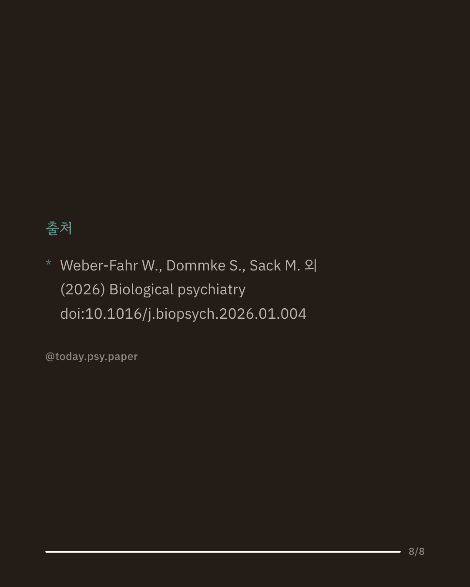

코로나19 감염 이후 5~10%는 피로와 인지 저하가 이어지는 포스트코비드(롱코비드)를 겪습니다. 그중에서도 집중과 기억이 흐려지는 '브레인 포그'는 대표 증상이지만, 뇌 안에서 무슨 일이 벌어지는지는 잘 알려지지 않았습니다. 연구진은 포스트코비드 환자 27명과 완전히 회복한 23명의 뇌를 자기공명분광영상으로 촬영해 세포의 에너지 상태를 비교했습니다. 환자군은 뇌의 '대상피질' 부위에서 에너지 분자(ATP)와 저장물질(인산크레아틴)의 비율이 낮았고, 이 저하는 앞·중간·뒤 대상피질에 걸쳐 일관되게 나타났습니다. 특히 앞대상피질의 에너지 비율이 낮을수록 인지검사 성적도 낮은 경향이 있었습니다. 이 결과는 포스트코비드의 인지 증상이 뇌 에너지 대사, 나아가 미토콘드리아 기능 이상과 관련될 가능성을 처음으로 생체 내에서 보여 줍니다. 다만 환자와 대조군을 한 시점에 비교한 연구여서 어느 쪽이 원인인지는 알 수 없고, 표본도 크지 않습니다. 단일 연구이므로 확대 해석은 조심해야 합니다. 출처: Biological Psychiatry (2026), 'Reduced Adenosine Triphosphate-to-Phosphocreatine Ratios in Neuropsychiatric Post-COVID Condition: Evidence From 31P Magnetic Resonance Spectroscopy' #정신건강정보 #롱코비드 #브레인포그 #뇌과학 #심리학연구
python3 publish.py 41525818